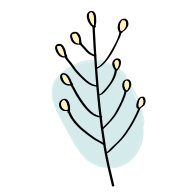

<article>
<aside class="card__aside">
  <figure class="card__figure">
<!--          -->
    <div *ngIf="post.img; else hasPhoto">
      <div class="card__image">
        <quill-view-html [content]="post.img"></quill-view-html>

      </div>
    </div>
  </figure>
</aside>
<header class="card__header">
  <h2 class="card__title">{{ post.title }}</h2>
  <h3 class="card__subtitle">
    {{ post.author }}
  </h3>
  <small>{{ post.date | date:'dd.MM.yyyy' }}</small>
</header>
<div class="card__body">
  <div class="card__copy">
    <quill-view-html [content]="post.text.substring(0, 250)"></quill-view-html>
  </div>
</div>
<footer class="card__footer">
  <div class="card__actions">
    <button
      [routerLink]="['/post', post.id]"
      class="btn btn-primary card__open"
    >
      Открыть
    </button>
  </div>
</footer>
</article>
<ng-template #hasPhoto>
  <div class="ql-editor">
    
  </div>
</ng-template>

